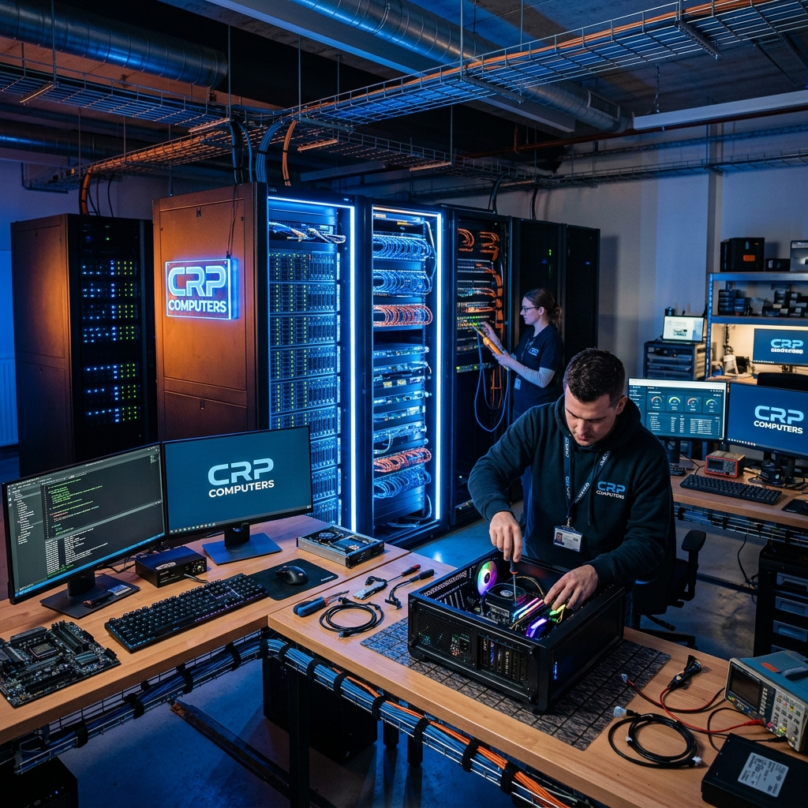
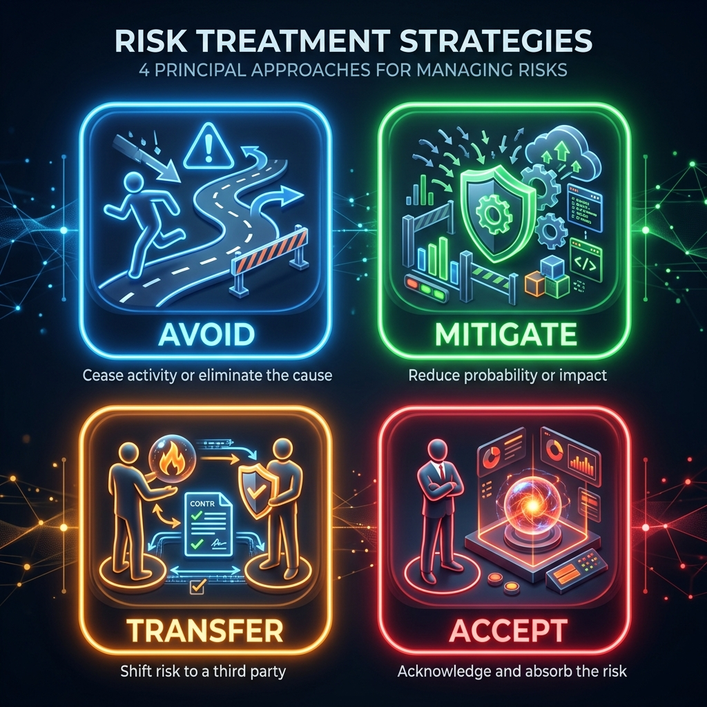

Auditoría y Seguridad de SI
Caso Práctico: CRP Computers
Raúl Gómez Téllez
Rubén Ramírez Peña
Víctor Aguilar Méndez
Jaime M. Cazalla Chica
01 / 13
Índice de la Sesión
Estructura de la Auditoría (15 min)
1
Contexto: Empresa y Entorno.
2
Alcance: Límites del análisis.
3
Activos: Identificación y Valoración.
4
Riesgos: Mapa y Análisis.
5
Controles: Plan de Acción.
6
Conclusiones: Resumen final.
02 / 13
CRP Computers
Perfil Organizacional
- Actividad: Montaje, venta y reparación de equipos.
- Ubicación: Pol. Los Olivares (Jaén).
- Modelo: 65% Tienda Física / 35% Online.
- Clientes: 3500 usuarios registrados.

03 / 13
Estructura de la Plantilla
12 Profesionales / 5 Departamentos
01
Dirección y Estrategia
02
Sistemas y TI (Administradores)
04
Operaciones (Taller y Almacén)
04 / 13
Infraestructura Crítica
Vectores de Riesgo Tecnológico
SPOF
Único Servidor Físico centralizado
WIFI
Red única sin segmentación lógica
5/año
Promedio de cortes eléctricos
Hardware: i5 11ª Gen | 16GB RAM | SSD 512GB | Panda Advanced
05 / 13
Alcance de la Auditoría
Límites y Exclusiones
INCLUIDO
• Nave industrial y Sala Servidores
• WIFI y Fibra DIGI
• Base de Datos de 3500 clientes
• Equipos en reparación (Taller)
EXCLUIDO
• Infraestructura interna del ISP
• Dispositivos personales (BYOD)
• Auditoría legal/financiera externa
06 / 13
Activos de Información
Sesión 2: Identificación y Valoración
DAT
Datos: Clientes, Facturación, Reparaciones.
SIS
Sistemas: Servidor, E-commerce, Red WIFI.
PER
Personal: Director, SysAdmins, Técnicos.
CRITICAL ASSETS:
Base de datos de clientes (DAT-1) y Servidor Central (SIS-1) valorados
con Magnitud de Daño MUY ALTA.
07 / 13
Mapa de Riesgos
Sesión 3: Amenazas y Vulnerabilidades
| Amenaza |
Activo |
Prob. |
| Infección Malware |
Servidor / PCs |
Alta |
| Corte Eléctrico |
Servidor |
Alta |
| Robo de Datos |
BD Clientes |
Media |
| Acceso No Autor. |
WIFI |
Media |
08 / 13
Análisis de Riesgo
Sesión 4: Ranking de Prioridades
10
Servidor Físico (Corte Suministro): Prioridad Máxima. URGENTE
8
BD Clientes (Acceso Indebido): CRÍTICO
6
Equipos Taller (Pérdida Datos Cliente): ALTO
09 / 13
Tratamiento del Riesgo
Decisiones Estratégicas
M
Mitigar: SAI para cortes luz y Backups.
P
Prevenir: Segmentación WIFI y Firewall.
T
Transferir: Seguro Ciber-riesgo DIGI.
A
Aceptar: Riesgos residuales mínimos.

10 / 13
Plan de Acción
Sesión 5: Controles ISO 27002
Control C-01: Energía
Instalación de UPS de 3000VA para el servidor central y equipos críticos.
Control C-02: Copias
Implementación de política de backups automatizados diarios y almacenamiento off-site.
Control C-03: Red
Creación de VLANs separadas para Administración, Taller y Clientes (Tienda).
Control C-04: Formación
Plan de concienciación en ciberseguridad para todo el personal (Phishing, RGPD).
11 / 13
Conclusiones
Resumen de la Auditoría
- CRP Computers presenta una alta dependencia de un único servidor (SPOF).
- La infraestructura WIFI actual es el vector de ataque más probable.
- La implementación de controles básicos (SAI, Backups, Segmentación) reduciría el riesgo residual en
un 70%.
- Es vital formalizar políticas de seguridad y cumplimiento de RGPD.
12 / 13
Bibliografía
Referencias y Metodologías
- Metodología MAGERIT v3: Análisis y Gestión de Riesgos (CSAE).
- ISO/IEC 27001:2022: Requisitos para SGSI.
- ISO/IEC 27002:2022: Guía de Controles de Seguridad.
- Reglamento General de Protección de Datos (RGPD): UE 2016/679.
- Material de Clase: Auditoría de SI (UJA).
¿DUDAS O PREGUNTAS?
13 / 13